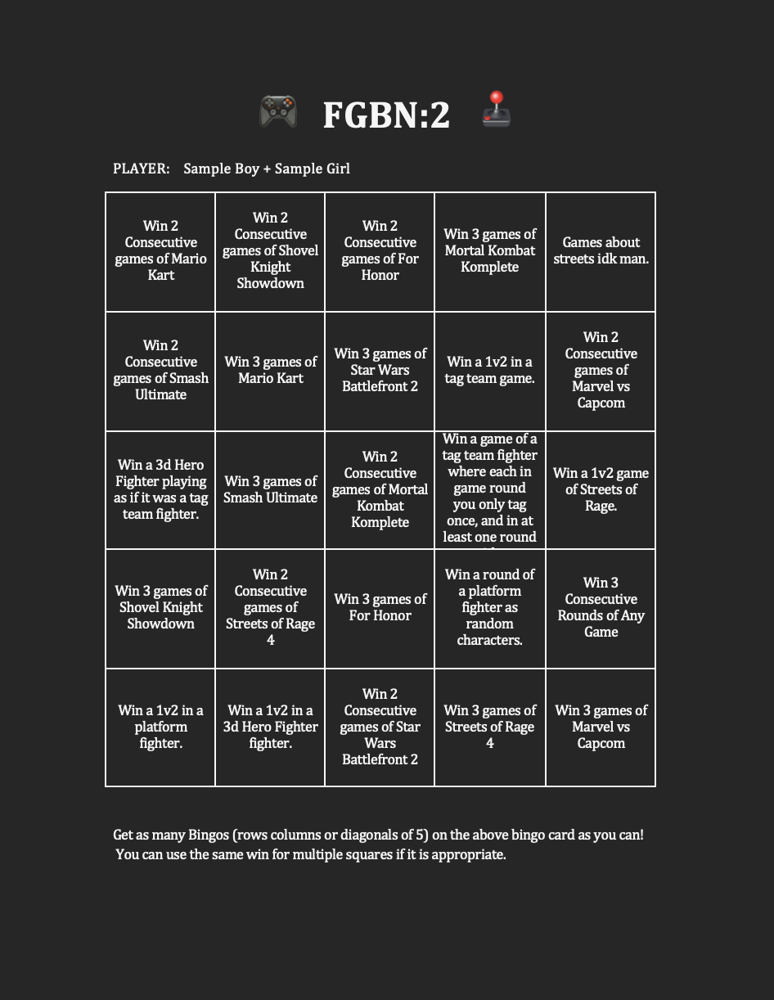

FIGHTING GAME
BINGO NIGHT
Inspired by For Honor's Brawl gamemode, Absolute Anarchy is a brand new take on the Fighting Game Bingo Night formula. Every single game is set up centered around 2v2 combat. Players will register as pairs (or will be paired later). Some games feature real-time 2v2, with all four players duking it out simultaneously. Others will feature tag-team mechanics with players switching off being the active combatant at will.
| Date and Time | Saturday, July 25th |
|---|---|
| Location | Milford, NH (in THE Basement) |
| Signup |
Go here for Signup Genius
Please put your partner as a guest if you have one.
|

The Games
For Honor and Super Smash Brothers Ultimate
For Honor and Smash Ultimate make a return on the roster. For Honor was the inspiration behind the event, and Smash already supported team fights. The challenges are changed however.
For Smash Ultimate the challenge will be: Win as random characters on a random stage, with items on, stage hazards on, and random handicaps on, and win without using final smash.
For For Honor: Win a tag-team match.
Mortal Kombat Komplete Edition
Released in 2012 this lost gem is the fully expanded version of Mortal Kombat 9. Unfortunatly this game has been displaced by modern entries and lost to time, but disks for the console version are not too expensive.
The reason this particular version of Mortal Kombat is being employed is it's the only game in the series to be built around tag-team play.
The Challenge:
Mario Kart Double Dash
The 4th installment in the Mario Kart series, Double Dash was the GameCube entry in the series. The game features karts piloted by two characters, one of which is steering and the other of which uses items. As a result it features a 2v2 mode where each pair of players pilots one kart.
We will be playing Balloon Battles.
Yes we know this isn't a fighting game lol
Shovel Knight Showdown
If your question is why my answer is: My shovel strikes for justice. Showdown is a platform fighter set in the shovel knight universe, featuring characters and enemies from Shovel of Hope and its spinoff games.
Players compete for the collection of diamonds.. most of the time. Since this is a chaotic title we might keep randomized gamemode on.
Star wars Battlefront 2
Star Wars Battlefront II is a large-scale multiplayer shooter-fighter developed by DICE in collaboration with Criterion Games and Motive Studio, and published by Electronic Arts in 2017. Set across multiple eras of the Star Wars universe, the game features large online battles and small online skirmishes.
We will be playing 2v2 Hero Elimination, running Jedi and Sith in small-scale personal combat.
Streets of Rage 4
Streets of Rage 4 is a side-scrolling beat 'em up and fighting game developed by Dotemu, Lizardcube, and Guard Crush Games, and published by Dotemu in 2020. Serving as a revival of Sega's classic Streets of Rage series, Streets of Rage 4 modernizes the series' arcade-style combat with hand-drawn animation, expanded combo systems, and both cooperative and competitive multiplayer while preserving the fast-paced action and soundtrack-driven style of the original games.
We will be playing 2v2 team battle.
Marvel Vs. Capcom
Marvel vs. Capcom: Clash of Super Heroes is a fast-paced arcade fighting game developed by Capcom that brought together characters from the Street Fighter and Marvel Comics universes. It was the first entry in the series to feature the now-iconic 2v2 tag-style team battles designed for up to four players, allowing players to form teams of two fighters and rotate through chaotic assist-driven combat in competitive or couch multiplayer settings.
Challenges
Win a 1v2 in a tag team game.
Win a 1v2 in a platform fighter.
Win a 1v2 in a 3d Hero Fighter.
Win a 1v2 in a game about streets.
Win a match, of a tag team game in which each round you only tag-team once and have at least one round where neither character dies.
Win a 3d hero fighter playing it as if it was a tag team fighter.
Win a platform fighter as random charaters.
Something in games about streets.